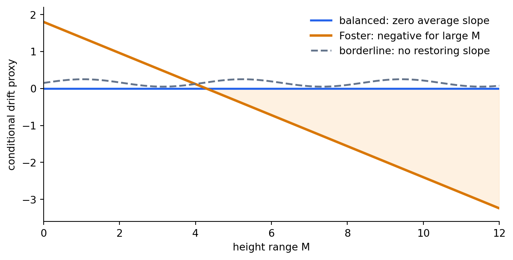

연구 ▷ HST ▷ balanced regime 과 Foster assumption 은 왜 다른가
Author
미소
Published
May 23, 2026
에이의 Theorem A 를 읽을 때 헷갈리기 쉬운 지점은 balanced regime 과 Foster assumption 이 둘 다 “height imbalance 가 커지지 않는다”는 느낌을 주지만, 실제로는 서로 다른 일을 한다는 점이다. balanced 는 장기 적립률의 평균 기울기를 맞추는 조건이고, Foster 는 큰 imbalance 가 생겼을 때 그것을 다시 낮추는 복원력을 요구하는 조건이다.
따라서 \(h_i(t)-h_j(t)\) 의 일차 drift 항은 사라진다. 즉 balanced 는 \(\rho_i-\rho_j\) 로 생기는 \(t\)-scale 평균 기울기를 제거한다. 그런데 평균 기울기가 0 이라는 말은 큰 deviation 을 되돌리는 힘이 있다는 말과 다르다. 공정한 random walk 도 drift 는 0 이지만 pathwise range 는 보통 계속 커질 수 있다. HST 에서도 balanced 만으로는 “눈이 장기적으로 같은 빈도로 온다”까지 말해 주고, “이미 크게 벌어진 높이 차이가 flow 때문에 다시 줄어든다”까지는 말해 주지 않는다.
Foster assumption 은 바로 이 두 번째 역할을 담당한다. round 시작 상태 \(S\) 에서 height range 를
\[
M(S) = \max_i \hbar_i - \min_i \hbar_i
\]
라고 할 때, 에이의 Foster 형 조건은 큰 \(M(S)\) 영역에서 drift proxy \(B(S)\) 가 음의 방향으로 충분히 내려가기를 요구한다.
Figure 1: balanced regime 과 Foster assumption 은 같은 명제가 아니라 서로 다른 역할을 맡는다.
이 차이는 \(M(t)\) boundedness 와의 관계를 보면 더 선명해진다. 만약 어떤 그래프 family 에 대해 정말로 모든 시간에 대해 pathwise 로
\[
\sup_{t \geq 0} M(t) < \infty
\]
를 직접 증명했다면, 그것은 \(M\) control 이라는 결론 면에서는 Foster 를 거쳐 얻고 싶었던 것보다 훨씬 강한 형태다. 그 경우 Theorem A 증명에서 Foster 를 쓰는 이유가 오직 \(M\) 을 제어하기 위해서라면, 그 부분은 pathwise bound 로 대체할 수 있다. 다만 이것이 곧바로 Theorem A 전체를 자동으로 끝낸다는 뜻은 아니다. occupation average, martingale term, \(\mathrm{SD}^2/t\) 수렴 같은 나머지 조각은 여전히 따로 맞아야 한다.
반대로 balanced regime 은 이런 pathwise bound 를 imply 하지 않는다. balanced 는 \(\rho_i=1/n\) 이라는 평균 빈도 조건이고, \(M(t)\) 가 커졌을 때의 conditional drift 부호를 직접 말하지 않기 때문이다. 그래서 logical strength 를 말하면, “pathwise bounded \(M\)” 은 Foster 의 목표 결론 쪽에 가까운 강한 명제이고, Foster 는 그 강한 결론을 얻기 위한 구조적 충분조건이며, balanced 는 그보다 앞단의 평균 기울기 조건이다.
import numpy as npimport matplotlib.pyplot as pltM = np.linspace(0, 12, 300)balanced_only = np.zeros_like(M)foster =1.8-0.42* Mborderline =0.15+0.10* np.sin(1.5* M)fig, ax = plt.subplots(figsize=(8, 3.8))ax.axhline(0, color="#334155", linewidth=1.0)ax.plot(M, balanced_only, color="#2563eb", linewidth=2.0, label="balanced: zero average slope")ax.plot(M, foster, color="#d97706", linewidth=2.4, label="Foster: negative for large M")ax.plot(M, borderline, color="#64748b", linewidth=1.8, linestyle="--", label="borderline: no restoring slope")ax.fill_between(M, foster, 0, where=foster <0, color="#fed7aa", alpha=0.35)ax.set_xlabel("height range M")ax.set_ylabel("conditional drift proxy")ax.set_xlim(0, 12)ax.set_ylim(-3.6, 2.2)ax.legend(frameon=False, loc="upper right")ax.spines[["top", "right"]].set_visible(False)plt.show()

Figure 2: balanced 는 평균 기울기를 0 으로 만들 수 있지만, Foster 는 큰 M 에서 음의 drift 를 요구한다.
현재 반례 상태도 이 구분 위에서 조심해서 말해야 한다. 앞서 떠올린 “flow 를 사실상 끈 toy boundary case” 는 balanced 가 Foster 를 논리적으로 포함하지 않는다는 직관을 보여 주는 장난감으로는 쓸 수 있지만, 표준 HST 반례로 박기에는 부적절하다. 대표님 지적대로 \(T_{\max}\) 는 적어도 최소한 \(n\) 이상, 보통은 그보다 넉넉하게 잡는 것이 자연스럽기 때문이다.
원격에서 Model A 기준으로 \(T_{\max}=2n\) sanity check 를 다시 보면, Wheel family 는 Foster tail slope 가 양수로 커지는 쪽이라 Foster 위반 후보처럼 보이지만 동시에 hub 와 ring node 의 장기 적립률이 크게 달라져 balanced 자체가 깨진다. 예를 들어 \(n=101\) 에서는 hub 의 \(\rho\) 가 약 \(0.089\) 인 반면 ring 평균은 약 \(0.009\) 수준이라 \(\rho_i=1/n\) 이 아니다. 반대로 cycle, complete bipartite, clique+matching 처럼 balanced 에 가까운 regular family 들은 같은 점검에서 Foster drift 가 음의 방향으로 나왔다. 따라서 지금 정직한 결론은 “balanced 가 Foster 를 형식적으로 imply 한다”가 아니라, “standard HST 의 자연스러운 \(T_{\max}\geq n\) 영역에서 balanced 이면서 Foster 를 깨는 graph-class 반례는 아직 확정되지 않았다”이다.
그러니 현 위치는 이렇게 두면 가장 안전하다. balanced regime 은 Theorem A 의 선형 drift 제거 조건이고, Foster assumption 은 height range 의 mean-reversion 조건이다. pathwise \(\sup_t M(t)<\infty\) 를 직접 증명하면 Foster 를 가정하지 않고도 \(M\) control 부분은 처리할 수 있지만, balanced 만으로는 그 결론이 나오지 않는다. 그리고 소미의 검증이 정말로 보여 주는 것은 “Foster 의 성립 여부가 graph class 와 \(T_{\max}\) 스케일에 민감하다”는 강한 신호이지, 아직 “Model A balanced 반례 최종 확정”은 아니다.